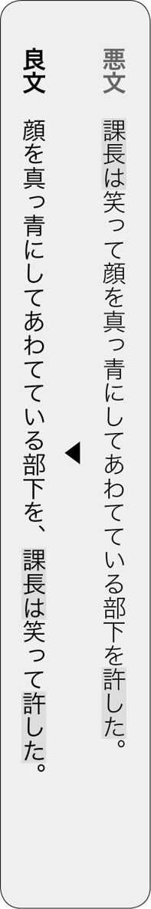
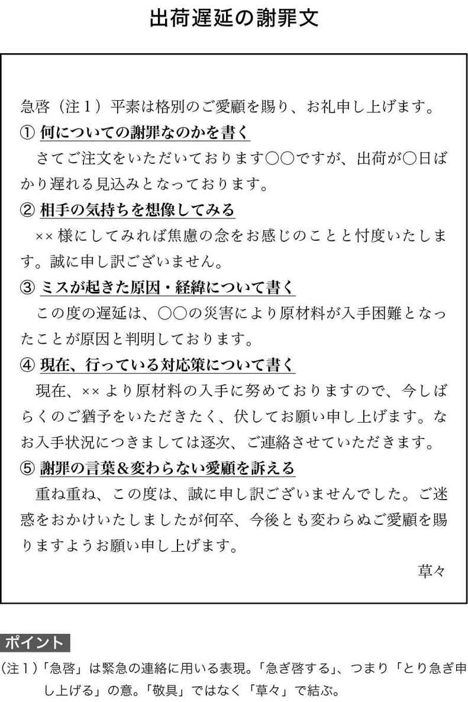
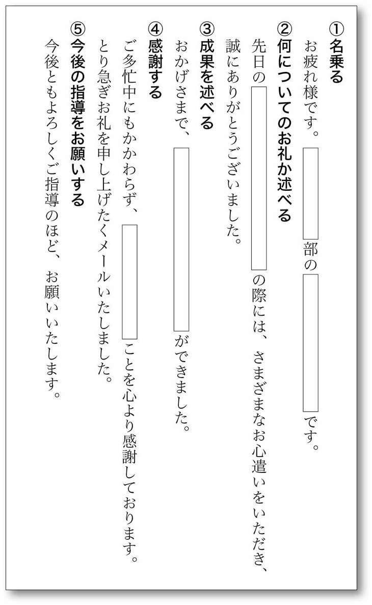
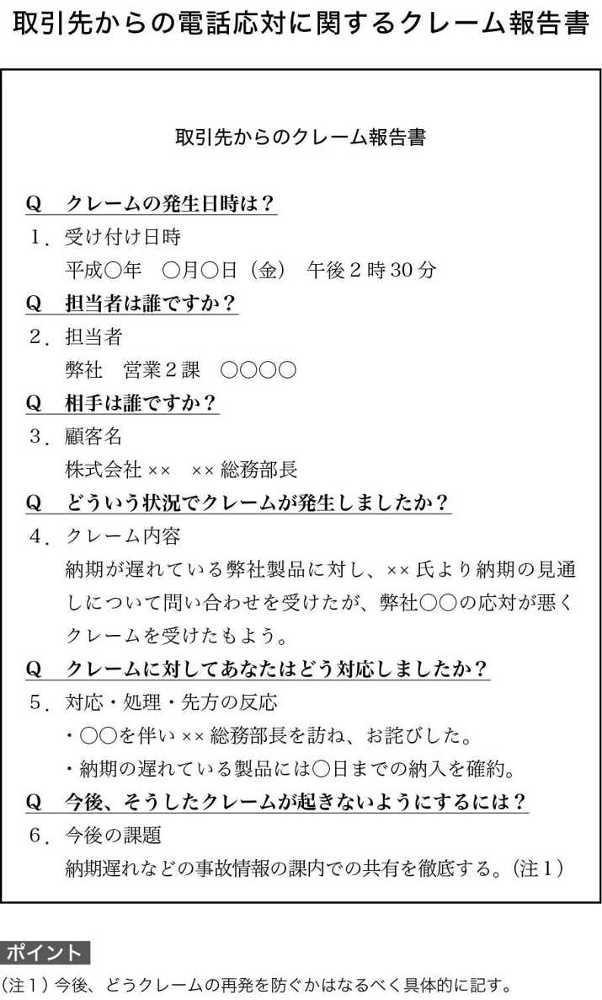

| スーパー速書きメソッド (マイナビ新書) | |
| 石田 章洋 | |
| (2014) | |
◆本文中には、™、©、®などのマークは明記しておりません。
◆本書に掲載されている会社名、製品名は、各社の登録商標または商標です。
◆本書によって生じたいかなる損害につきましても、著者ならびに（株）マイナビは責任を負いかねますので、あらかじめご了承ください。
漫画、小説、一般書籍 RAW ZIP RAR 無料ダウンロード http://13DL.NET
はじめに
あなたは仕事をしている時間の多くを「書くこと」に費やしていませんか？
日報に取引先へのお礼のメール、社内メールに企画書、提案書に出張報告書......。
そうしたビジネス文書を書くことに奪われている時間を営業活動にまわせたら、ノルマだってらくらくクリアできるんだけどなあ---------。
そんな歯がゆさを感じている方も多いでしょう。ただ、ビジネス文書を書くことに貴重な時間をとられているのは、あなただけではありません。
じつはいま、ビジネスシーンでは、以前に比べて「書くこと」の比重が高まる一方。そのため残業時間の大半を「書くこと」に費やしている人もいるほどです。
本書は「書くこと」に多くの時間を費やさざるをえないあなたに、苦労せずサクサクと「文章を速く書き上げるための技術」を伝える本です。
わたしは30年近く、書籍の編集およびライター、そして放送作家の仕事にたずさわってきました。ここまでの半生、まさに「書くことが生きること」だったといって過言ではありません。
最近は４冊の書籍の執筆と、３本のテレビのレギュラー番組および特番の台本書きを同時にこなしています。そういうと「徹夜続きで大変でしょう、ちゃんと眠れていますか」などと心配していただくことがあります。しかし、わたしはそれらの仕事を、余裕を持って進めています。それは本書で紹介する「速書きメソッド」を使っているからです。
この「速書きメソッド」はわたしの30年以上続く、文筆生活のなかで身につけたもの。ライターデビュー当時は、たびたび締め切りに遅れて迷惑をかけていたわたしが家族と猫たちを育てるためにトライ＆エラーで習得した、文章を速く書くためのコツです。
そのノウハウを今回は、ビジネスマンのみなさんが仕事に使えるよう、わかりやすくアレンジしました。
メソッドの中身は、いたってシンプルです。速く書くためには、まずひとつの文を迷わず作ること。その基本を第１章で紹介します。
第２章では、そうして作ったひとつひとつの文をすばやく組み立ててビジネス文書に仕上げるノウハウについて書いています。
第３章では「穴埋め」するだけでビジネス文書を作ることができるフレームを紹介します。フレームとは構造、構成のこと。穴埋めするだけでビジネス文書をどういう流れで書けばよいか、構成の基本が身につくものです。
第４章で紹介するのは、質問に答えるだけで「企画書」や「報告書」を書き上げて、オリジナルのフレームを作るノウハウ。第３章とあわせてやってみれば、ビジネス文書がどういう構造をしているのか、誰でも理解できます。
第５章は、わたしも日常の仕事で大いに活用しているワープロ機能のウラ技や禁断のコピペ技といった速く書くためのテクニックです。ちょっとしたことなのですが、こうした技を知っているかいないかで、大きな差が出ます。
第６章は速く書くための環境作り、第７章はレポートや論文といった長文を速く書くために知っておきたいこと。
これらをマスターすれば、ビジネス文書を書くことにとられていた時間を、本来やるべき業務に向けることができます。
速く書けるようになることは、あなた自身の成長につながります。
例えば１日に平均３時間、書くことに費やしていた時間が半分になれば１週間で10時間を超える自由な時間が持てます。その時間を読書に使うことができたら１年後、本を読まなかった同僚とどれほど差ができているでしょうか。
その時間を趣味やデートに使うことができたら人生がどれほど充実するでしょう。ジョギングをしたりスポーツクラブに通ったりして体を鍛えてもいい。あなたの体力は向上しビジネスの場でもプライベートでもエネルギッシュに活動できるはずです。
ビジネスの文書は名文や美辞麗句である必要はありません。情報がストレートに伝わればよいのです。頭を悩ませていないで時間を有意義に使いましょう。
第１章 一文を速く書き、伝わる文にする秘訣
第１章では「時間がかかり伝わらない文章＝〝悪文〟」と「速く書け、伝わる文章＝〝良文〟」を比較しながら速く書くコツを学んでいきます。自分に当てはまる「症状」がある場合、そこを改善すれば速く書けるようになります。
〝ダラダラ文〟症候群のあなたへ
短いから速い！
「文章がダラダラと長い」、そういわれた経験はありませんか。あるとしたらそれは〝ダラダラ文〟症候群の初期症状です。悪文と良文を比較してすぐに治療しましょう。
ビジネス文書で、「悪文」のように次から次へ、つなげて書いてしまうと読み手には〝何がいいたいのか〟わかりにくくなります。またタイピングする文字数も増えるため物理的に時間がかかります。
ビジネス文書を速く書き上げたいなら、ひとつの文を短くいい切ることが大切です。目安は40字以内。それより長くなったらどこかで句点＝「。」を打てないか、考えてください。
悪文の網掛け部分に注目してください。このように「ので」や、逆説でもないのに「が」を使って文をつなげるとダラダラ長くなります。書きながら「が」や「ので」を使いたくなったら、そこで句点を打ってみましょう。
言葉は短くいい切ればいい切るほど、強くなる性質を持っています。その点でもひとつの文は短くいい切りましょう。
〝詰め込みすぎ〟症候群のあなたへ
具が少ないから味がきわだつ
ひとつの文にいろんな要素を詰め込んでしまうのが〝詰め込みすぎ〟症候群。
これも文章が長くなってしまい、書くスピードが遅くなる原因です。

漫画『美味しんぼ』（小学館）の主人公、山岡士郎は新婚の妻、栗田ゆう子に「味噌汁に具をいっぱい入れると〝味が濁る〟」と注意しました。この発言に読者からは「味噌汁を作ってくれた新婚の妻になんてことをいうのだ！」との批判がありました。また具沢山の豚汁などは美味しいですよね。ただしビジネス文書においては山岡のいうとおりです。
「悪文」では、出だしから句点まで一気呵成にナポレオンの半生が書かれています。これではナポレオンの半生のどこを強調したいのかわかりません。ひとつのお椀に具をたくさん入れすぎてしまうと「文章の味が濁る」のです。比べれば「良文」のほうがナポレオンの栄枯盛衰がきわだっています。
それだけではありません。ひとつの文章の中にいろんな材料を詰め込もうとすると、書いている方も整合性を取りつくろうのが大変になります。
豚汁を作るには時間がかかります。でも豆腐の味噌汁を作るのは簡単ですばやいのと同じ。文の中にもいろんな〝具〟を詰め込まないように心がければ速く書けます。
〝意味不明文〟症候群のあなたへ
主人と家来が近いから伝わる
ここでいう「主人」とは「主語」のこと、「家来」とは「述語」のことです。主語は「 何が・何は・誰が・誰は」 にあたる言葉で、述語は「 どうする・どうした」 などの言葉です。このふたつが離れると読み手が混乱する文になります。

「悪文」では、主人（主語）である課長が「笑って」いるのか、「顔を真っ青にしてあわてている」のか、読んでいるほうが混乱します。その原因が家来（述語）と離れてしまったことです。
この場合の主人（主語）は「課長」、家来（述語）は「許した」ですから、「良文」のように、そのふたつが近くにあると混乱が起きません。家来は主人のすぐそばにいるから情報の伝達がスムーズなのです。
例文は、センテンスが短いため、まだ書くほうに混乱は起きないかもしれません。
しかし長い文の場合に、主人と家来を離してしまうと間にさまざまな要素が入るため書くほうも混乱してきます。その結果ひとつの文を書くにも時間がかかってしまいます。
伝わる文を書くためには、いつも主人のそばに家来をひかえさせるよう心がけます。
主語を書いたあとには、心の中で述語に対し「苦しゅうない、近こうよれ」といってみましょう。
〝文章メタボ〟症候群のあなたへ
逃げずにダイエットしろ！
メタボは健康によくありません。また太っていると動きも遅くなりがちです。同様にビジネス文書でも余計な脂肪＝言葉がついていると書くスピードが遅くなります。〝メタボな文章〟とそうでないスリムな文章を比べてみましょう。
悪文と良文は、同じ内容です。しかし良文の文字量は悪文の約４分の１。その分、速く書けるのはいうまでもありません。では悪文のどこがメタボなのでしょうか。
まず悪文の網掛け部分。「基本的に」は、いい切る自信がないとき、確信が持てないときに使う「逃げ」の言葉です。必要ありません。「思われます」も同じく腰の引けた逃げの言葉です。使いたいときは「思います」にします。
そう書きましたがビジネス文書では「思います」も不要です。
例えば「今後、調整を進めてみたいと思います」といった文は「今後、調整します」といい切りましょう。「という国も」も意味のない逃げ言葉ですので不要です。「という」は省けるケースが多いので省略しましょう。
いい切ることから逃げていると文がメタボになるだけでなく、説得力に欠けるビジネス文書になるので注意してください。
〝頭痛が痛い文〟症候群のあなたへ
重ね着は稚拙なファッション
前項と同じ文章ですが、今度はこちらの網掛けの部分に注目してください。
同じ意味の言葉が重なっていることに気づくはずです。
まず「世界的に見ても」。これはあとに登場する「最貧国」の中に、「世界的にもっとも貧しい」という意味が含まれているので省きます。「人々がとても生活に困っている」も「貧しい」も、「最貧国」というひと言でいい表せるので落とします。
同じ意味の言葉が重複する「重ね言葉」は稚拙な文章の代表です。代表的な例として「頭痛が痛い」「馬から落ちて落馬した」があるため「頭痛が痛い文」とか「馬から落馬文」とも呼ばれます。
あなたも「まず最初に」「あらかじめ予定された」など、重ね言葉をうっかり使っていませんか？
これらの重ね言葉は、言葉の意味を考えれば防げます。例えば「あらかじめ予定された」。「予定」とは「予（あらかじ）め定められた」ことだとわかれば、重ねてしまうことはありません。
最近のワープロソフトは、「あらかじめ予定」とか「まず最初に」などの重ね言葉を入力すると「波線」で指摘してくれます。そうした機能も利用しましょう。
〝繰り返し〟症候群のあなたへ
ゴミはまとめて捨てましょう
〝重ね言葉〟ではありませんが、述語の部分で同じ意味の言葉を繰り返している文章もダイエットできます。
大食い選手権に出場できそうな彼女です。豪快な食べっぷりを表現するため「残さず食べた」「完食した」「ぺろりとたいらげた」などとブログに書くと親しみやすい文章になります。
ただしビジネス文書を速く書くという点からはおすすめしません。なぜなら「食べる」も「完食する」も「たいらげる」も同じ意味だからです。同じ意味の述語を繰り返して無駄に文字数を増やしていますので、良文のように「すべて食べた」でまとめましょう。
同じ意味や、似た意味の言葉をまとめると文章はスッキリします。
例えば「部長のアドバイスや助言、そしてご提案のおかげで企画が通りました」という文章。部長に感謝する気持ちはわかりますが「アドバイス」も「助言」も「提案」も同じです。速く書くならば、どれかひとつにまとめましょう。
ひとつの文章にまったく同じ言葉が繰り返し出てくる場合も削ってひとまとめにしてください。「企画を通すための課題としては、３つの課題が考えられる」は「企画を通すための課題は３つある」で十分です。
〝それ・この・その回避〟症候群のあなたへ
「ピンチヒッター指示代名詞」で伝わる
多用すると混乱をもたらす〝指示代名詞〟も使い方次第です。
小学生時代の国語のテスト。例文が書いてあって、「文中の『それ』はいったい何を指すか？」という問題がよく出されました。
ビジネス文書は国語のテストではないので「それ」「これ」「その」といった指示代名詞を多用するのは禁物、具体的に書くよう指導されます。
しかし良文のように直前の文を受け、ほかに選択肢がない場合は使って構いません。悪文のように「新しいオペレーティングシステム（ＯＳ）の導入を提案します。新しいオペレーティングシステム（ＯＳ）が導入されれば～」などと書いていると残業時間が増えるだけです。
多く用いると読み手が混乱するためビジネス文書ではよくないとされる指示代名詞ですが、直前の文を受ける場合は積極的に使って時短に努めましょう。
〝丁寧すぎ〟症候群のあなたへ
余計なことは書くな！
文章のダイエット法を紹介してきましたが、文章術以外の部分で省略できるものも多くあります。例えば上司に提出する「日報」の例 --------- 。
日報は、日々の営業の成果を報告するもの。ですから「本日の営業活動について以下に報告いたします」と断る必要はありません。同じく「以上、本日の営業活動についての報告でした」という締めの言葉も省略できます。
企画書でも「企画意図」という見出しを書いたあとに、「それではここからこの企画の狙いを説明させていただきます」といった前書きを書く人がいますが、余計な前書きは不要。速く書くためだけでなく、積極的に省きます。
余計な前書きだけでなく、余計なつなぎの言葉も省けます。「というのも」「なぜなら」「そして」「そこで」「そのため」「また」「それに」「さらに」といったつなぎの言葉は、省いても文章が成立するなら省略します。
一語でも一字でも短くする意識は時短になるだけでなくビジネス文書をシャープなものにします。速書きの達人を目指すならば体脂肪率の少ない引き締まった筋肉質な文章を心がけましょう。
〝否定文〟症候群のあなたへ
ポジティブだから誤解を防げる！
「前向きな気持ちで書けば速い！」という精神論ではありません。ビジネス文書にも「ポジティブ」なものと「ネガティブ」なものがあるのです。
「少なくない」「いけないわけではない」などと否定形にすると意味も伝わりにくくなります。「少なくない」なら「多い」、「いけないわけではない」なら「いく」といい切りましょう。「いきたいけれどいけない」というニュアンスを含めたいなら、きちんといけない理由を述べるべきです。
注意したいのは、網掛けがしてある「できないわけではない」「しない場合が少なくない」という部分。このようないい回しを「二重否定」といいます。
明確な意思表示が求められるビジネスシーンで二重否定のような曖昧な表現をしていると誤解を生む原因となります。
〝ハルキ・ムラカミ〟症候群のあなたへ
比喩を使わないから速い！
村上春樹さんの小説は比喩が効果的に使われていて読者を村上ワールドへと引き込んでいます。しかしビジネス文書は小説とは異なり、「実用文」です。物事を何かにたとえる比喩表現は避けましょう。
「悪文」は〝直喩〟という比喩表現を使っています。しかし比喩の受け止めかたは人によって異なります。急成長を「タケノコのように......」とたとえた場合、書き手の意図通り〝急成長〟と受け取ってもらえればよいのですが、中には「雨後のタケノコ」を連想する人もいます。
「雨後のタケノコ」といえば「雨が降ったあと、タケノコが次々に出てくるところから物事が相次いで現れることのたとえ」なので、急成長の意味で使ったつもりでも、相手によっては「けなしている」と受け取られかねません。
「まるで天使のよう」「地獄のよう」といった比喩も、天使や地獄を実際に見たことがある人は少数派なので避けます。「坂道を転げ落ちるように業績が悪化した」という比喩も具体的な数字で書きましょう。
比喩は「主観」の形容です。ビジネスでは主観より客観的な事実が大事。どう受け取られるかわからない比喩表現は必要ありません。
〝ルー語〟症候群のあなたへ
カタカナ語の使いすぎに注意
カタカナ語を交えて話す、ルー大柴さんの〝ルー語〟が昔、流行りました。ルー語はギャグですが、ビジネスの場でもギャグのようなカタカナ語を使っていませんか？
「悪文」のように英語をカタカナで表した、いわゆる〝カタカナ語〟を多用する人がいます。
しかし、ビジネス文書は「実用文」であることを忘れないでください。「ダイバーシティ」と書いてある場合、中にはフジテレビのあるお台場の街を思い浮かべる人もいます。そうであれば「多様性」と書くほうが確実に伝わります。「実用文」である限り、読み手に伝えたいことがすんなり伝わらないと意味がありません。
また、ほとんどのカタカナ語は和訳された言葉で書くより長いです。「イニシアチブ」は６文字ですが「主導」なら２文字、「エンフォースメント」と書けば９文字ですが「法執行」ならわずか３文字。「グローバルスタンダード」は11文字もありますが「世界標準」なら４文字ですみます。また「ディ」とか「トゥ」とかのカタカナ入力はキーボードも押しにくいです。
キーボードのタイピング数を増やして、しかも伝わりにくい、さらに「格好つけている」と思われてしまう、カタカナ語をあえて使う理由はありません。
〝文末難民〟症候群のあなたへ
文末を統一すれば読みやすい！
文末とは句点＝「。」の前に来る語尾のこと。
語尾を統一していないと次にあげる悪文のような〝文末難民〟となります。
「悪文」の語尾には「である調」と「です・ます調」の両方が使われています。語尾に異なる文体が混ざっていると読みにくいもの。ビジネス文書では必ずどちらかに統一します。
語尾を「です・ます調」にした場合は、文頭も「だから」ではなく「ですから」に統一すれば「できるやつ」と思われます。
どちらの文体に統一するか迷ったら「～だ」に決めましょう。なぜなら簡潔な文になるからです。文末を「です・ます調」に統一すると全体の言葉遣いも丁寧なものとなって字数が増えるだけでなく、変化の少ない単調な文章になってしまいがちです。
目指すのは、速く書ける引き締まった筋肉質の文章。「文末」を「～だ」に決めれば必然的に文章も引き締まったものになります。
ただしメールや手紙など、相手に語りかけるようなものは「です・ます調」が基本です。
〝～の～の～の〟症候群のあなたへ
「～の」は３タイプに置き換えろ！
文章を書いていて何度も助詞に「～の」が続き、「いくらなんでも〝～の〟が続きすぎだ。どうしよう！」と困ったことはありませんか？
悪文のように「～の」が何度も続いていて、「～の」をほかの言葉に換えたいのに思いつかないときは焦ってしまいます。
しかし、置き換えのコツさえ覚えれば、そんなことで迷わずに文章を書き進めることができます。
「～の」が続いた場合、
「場所」であれば「～に」「～にある」「～で」
「対象」に関することであれば「～について」「～に関する」
「所有物」であれば「～が持っている」「～が所有する」
に置き換えましょう。
例文で「きのうの赤坂」を「きのう、赤坂」としたように、省略したうえで読点に置き換えることもできます。「～の」は省略できる場合も多いのでまず省くことを考えて、省けない場合にほかの言葉に置き換えてください。
〝置き換え力不足〟症候群のあなたへ
ことわざや慣用句の効果的な使い方
事実をそのまま書くと文章が長くなるとき、ほかの言葉に置き換えるだけで短くできる場合があります。「ことわざ」や「慣用句」も置き換えに使えます。
ことわざや格言、慣用句の中には、長い説明をひと言で表してくれるものがあります。「良文」で使った「急がば回れ」もそのひとつ。「悪文」のような文章を一気に短縮する効果を持っています。
ほかにも「継続は力なり＝ひとつひとつの効果は微々たるものであっても、たゆまず努力を続けていけば、やがてはひとつの大きな事業を達成できる」、「小異を捨てて大同につく＝ 少しくらいの意見の違いがあっても、大勢の支持する意見に従う」、「我田引水＝物事を自分の利益となるようにひきつけて言ったり、したりする」、「是是非非＝よいことはよい、悪いことは悪いと、事に応じて判断する」などの慣用句を使えば長くなる説明を端的に表現できます。
「Ａ社のＢ課長は無理な案件を含め、さまざまなリクエストをしてきますが、ひとつひとつの案件をよく見極めて、できるものはできる、できないものはできないと判断して対応していきたい」という長い文章も「Ｂ課長のリクエストには是々非々で対応したい」と書けば短くなります。
急がば回れ、試行錯誤しながら慣用句を使いこなせるようにしておきましょう。
〝ねじれ文〟症候群のあなたへ
文をトルネードさせるな
前半と後半でねじれている〝トルネード文〟は読む人を混乱させます。
例えば次の悪文のような例です。
悪文のような言葉は話し言葉であれば通じるかもしれませんが、ビジネス文書としては不合格です。なぜなら文が前半と後半でねじれているからです。
文が前後半でねじれるトルネード文章は、基本通りシンプルな一文を作ることで防げます。ビジネス文書の基本は「何がどうした」「誰がどうした」です。良文のように「わたしは～送った＝誰がどうした」とする基本のスタイルを心がければもっともシンプルで迷いません。
もうひとつ、文の前後がトルネードしやすいパターンをあげます。
「ブラック企業では、社員の自由を奪っている」。
これは「能動」と「受動」が混在しているパターンです。「ブラック企業では」とするなら「社員の自由が奪われている」と受動で受けなければねじれます。または前半を「ブラック企業は」、後半を「奪っている」として能動で受けても構いません。
文を書いたら、出だしと終わり方がねじれていないかチェックする習慣をつけましょう。
〝並べ方がわからない〟症候群のあなたへ
言葉の並べ方には基本がある
文章の構成要素、５Ｗ１Ｈにも並べ方の基本形があります。
それを知っている人と知らない人では一文の作成速度に大きな違いが出ます。
速く書ける人は、情報の並べ方の基本的なルールを知っています。
基本は良文のように①「いつ（明日）」②「どこで（表参道で）」③「誰が（山下部長が）」④「誰に（先方の担当者に）」⑤「何を（資料を）」⑥「どうするか（渡す予定）」の順番で並べ、一文を作るというものです。
悪文でも意味は通じますが、その都度情報をどう並べるべきか迷っていたら余計な時間がかかります。基本の順番を覚えておいて、その通りに並べるほうが迷いなく一文が完成します。
①「いつ」②「どこで」③「誰が」④「誰に」⑤「何を」⑥「どうするか」という、基本を頭に入れておき、その順番で一文を作る習慣を身につけましょう。
そのうえで「主人（主語）」と「家来（述語）」が離れてしまう場合など、そのままではわかりにくくなる場合はこの原則を変えればよいのです。
並べる順番に迷ったら基本形で書く。基本があるとないでは大きな違いが出ます。
〝早押しクイズ文〟症候群のあなたへ
主人公は最初のシーンに登場させろ
映画やドラマ、小説でもそうですが誰が主人公なのか、なかなかわからない文章は受け手が混乱します。

悪文はまるで早押しクイズの出題文です。「人類史上もっとも多才との呼び声も高い～」のあたりで早押しボタンを押してマイクに向かい「レオナルド・ダ・ビンチ！」と思わず叫んでしまいそうです。
ビジネス文書はクイズではありません。何行にもわたって、誰のことを書いているのかわからない文はありえません。早めに「主人公」を登場させ理解しやすい文にしましょう。
悪文のように、主人公が遅れて現れるビジネス文書をよく見かけます。例えば「会社設立後１年半の新設会社でありながら、すでに７社のホームページ作成を担当し、ネットを通じての問い合わせにも対応していて、未だ大きなトラブルがないＡ社は～」といった文章。これなども「Ａ社は～」で始めて主人公を最初に登場させます。
一行書いて、まだ主人公が現れていなかったらあなたの文は「早押しクイズ文」になっています。映画やドラマと同じ、主人公は早めに登場させることが鉄則です。
〝読点サギ〟症候群のあなたへ
意味の切れ目が読点の出番
「こういうとき、どうするんだっけ？」「書くには書いたけど、これで間違っていないんだっけ？」、そうした〝迷い〟は文書の完成を遅らせる大きな要因です。最低限のルールは覚えておきましょう。まずは「読点」編からです。
悪文では「大きな豚肉」という文と「たっぷりのにんにくがラーメンのうまさの秘密」という文を「、（読点）」が切り離しています。しかし本来「大きな豚肉」と「たっぷりのにんにく」は「ラーメンのうまさ」を引き立てている「並列」の要素です。ですから「、（読点）」で分けるとしたら「良文」が正解です。
ビジネス文書における「、（読点）」の役割は、このように関係が近いものをまとめ、読み手に文章の構造をわかりやすく提示して誤解が生じないようにすることです。
『日和違い』という読点で誤解する古典落語があります。「今日は、雨が降る天気ではない（＝晴れ）」と教えられたと勘違いし、傘を持たず出かけた男が雨に降られ、ずぶ濡れになるという噺です。これも文章にして「今日は雨が降る、天気ではない＝（雨）」というように読点で区切れば誤解が生じることはありません。
ビジネス文書では「誤解を避けるために読点を打つこと」がもっとも大切です。
〝バイト敬語〟症候群のあなたへ
敬語のルールはただひとつ
わかっているつもりでも、いざ書こうとすると迷うのが敬語。
あなたは次にあげる「悪文」の何が問題か、わかりますか？
失礼があってはならない人や地位の高い人には敬語をいくつも重ねてしまいがちです。しかしたくさん敬語を使ったからといって敬意が強調されるわけではありません。
「悪文」のようにひとつの文に敬語を２つ以上つけた多重敬語、二重敬語は、避けるべきです。
それではここでクイズです。網掛けをした「社長様がおっしゃられておられました」という文章にはいくつの敬語が含まれているでしょうか？
正解は「４つ」。①「様」②「おっしゃる」③「られる」④「おられる」が絡まり合っているのです。「ひとつの文に敬語はひとつ」というルールがわかっていれば迷うことなく「社長がおっしゃっていました」となるはずです。
ただ敬語のルールはそれだけではありません。迷う時間がもったいないと思ったら、ポケットサイズの「敬語辞典」などを買って引き出しにしのばせておきましょう。
またコンビニエンスストアやファストフード。そうした接客業でのアルバイトで覚えた敬語、いわゆる「バイト敬語」はビジネスシーンでは慎重に使いましょう。
「バイト敬語」には文法的に間違っているものが多くあるからです。例えばコンビニエンスストアのレジでよく耳にするこのフレーズ。
「こちら、レシートになります」
この「～になります」という表現は本来、「ある状態から別の状態への変化」を意味するもの。
「レシートになる」といわれれば、「この紙はいつになったらレシートになるのか？」「まだレシートになっていないのであればいま、この紙はなんなのだ？」と突っ込まれても仕方ありません。
それでは「レシートをお返しいたします」といえばよいでしょうか。
これも間違い。レシートは客が店に預けているものではないので、返すものではありません。この場合、普通に「レシートをお渡しします」でよいのです。
ほかにも「１万円からお預かりします」は「１万円、お預かりします」。「こちらでよろしかったでしょうか？」も「こちらでよろしいでしょうか」。「商品のほうはお持ち帰りですか」は「商品はお持ち帰りですか」でいいですし、「お並びいただく形になってしまいます」は「並んでいただく」で構いません。
第２章 伝わる文章を速く作る秘訣
一文を速く書けるようになったら、それらを並べてまとまったビジネス文書に仕上げます。そこで時間をとられてしまう人も多いのではないでしょうか？ ここからはよりすばやくひとつのビジネス文書を書き上げるためのノウハウを紹介していきます。なお、書くのに時間がかかる文を「遅文（ちぶん）」、速く書ける文を「速文（そくぶん）」として解説します。
〝準備不足〟のまま書いているあなたへ
６Ｗ４Ｈで材料を集めろ
速く書ける人と書くのが遅い人、最大の違いがしっかり準備を整えているかいないかです。あなたは遅文の凡人のようなことをしていませんか？
学校で習った５Ｗ１Ｈ。これは「いつ（When）、どこで（Where）、誰が（Who）、何を（What）、なぜ（Why）、どのように（How）」という６つの要素をまとめた情報伝達のポイント、書くべき「材料」のことです。５Ｗ１Ｈにあたる内容を確実に伝えると情報をわかりやすく伝達できます。
ビジネスの場では、さらに広げて「６Ｗ４Ｈ」の要素から集めるよう心がけると必要な材料がもれなくそろいます。６Ｗ４Ｈとは......、
何のために（Why）、誰が（Who）、何を（What）、誰に（Whom）、いつ（When）、どこで（Where）、いくらで（How much）、どのように（How）、いつまでに（How long）、どのくらい（How many）。これをひとつずつ材料としてそろえるのです。
テレビの料理番組と同じで必要な材料が必要な分量、トレイの上に用意されていたらすばやく調理できます。それと同じことです。書き始めてから材料を探すから時間がかかるのです。必要な材料をそろえたうえでパソコンに向かいましょう。
〝目的がわからない〟で書いているあなたへ
誰が何のために読むか想定すれば、速い！
前項で紹介した６Ｗ４Ｈという「材料」のすべてを盛り込む必要はなく、目的に応じて取捨選択します。どの材料を選ぶかは「誰が何のために読むのか」で決まります。
例えば「課長に売上目標を達成できるかどうかを報告」する場合、こんな文章を書いていませんか？
「課長も出席されていた会議でわたしが立てた、売上を先月の１２０％にするという目標についての報告です。あれから半月あまりが経った現在、昨日も課長に報告した、Ａ社からのクレーム処理に戸惑ったこともあり、なかなか苦戦していましたが、なんとか達成できる見込みです」
この文章は、「誰に何のために伝えるか」が明確になっていないため、ダラダラと長くなっています。これは「課長に売上目標を達成できるかどうかの報告」ですので「いつ立てた目標か」や「Ａ社とどんなトラブルがあったか」といった情報はすでに課長と共有しています。これは「報告書」ですから、「について報告します」といった前書きも不要です。ですから「先月比１２０％の売上目標、現在、Ａ社の件の処理も終わり、達成できる見込みです」という短い報告で構いません。
速く書くためには、「誰に何のために書くのか」を明確にして、余計な材料を省く。その上でシンプルに短く書けば、文章にわずらわされる時間はぐっと短くなります。
〝絞り込み不足〟で書いているあなたへ
材料を絞り込む方法
「誰に何を伝えるか」で材料を取捨選択したら、さらに材料を絞り込みましょう。
材料選びの優先順位は、伝えたいことを「どれだけ強く支えてくれるか」です。
例えば、以下のようなものが考えられます。
＊伝えたいことに則した「事実・実例」
＊伝えたいことを裏付ける「データ・数字」、似たような「過去の事例」など
＊集めた材料に対する、あなたの「意見」
一方、材料に使うとマイナスの作用をするものもあります。
＊根拠のあいまいなもの（噂・ネット情報など）
＊ 偏見や個人的な好き嫌いの混ざった意見、「想像」「推定」、十分な事実の裏付けがない「独断」
＊伝えたいテーマとまったく関係のないこと
これらが混ざると伝える力が弱まるばかりか、逆効果になることさえあります。
同じような材料があり、どちらか迷ったら「受け手と共有しやすいもの」「オリジナリティがあるもの」「新鮮なもの」「わかりやすいもの」を選択しましょう。
〝行き当たりばったり〟で書いているあなたへ
書く前に設計図を作成せよ
書くスピードを大きく左右するのが、文書全体の「設計図」を用意しているかどうかです。設計図なしに書き始めるのは、地図も持たずに見知らぬ街を歩くのと同じで迷子になってしまいます。
「速く書き上げる」ための最大のコツ、それは「急がば回れ」です。材料を集める時間がない。材料をどう並べて文書にするか考えるのが面倒だ。そう考えて書きながら材料を探したり、書きながら全体の流れを整えたりしていると、結局、書き上げるのに余計な時間がかかるのです。
ビジネス文書も同じです。Ａ４サイズ１枚の報告書を10分で書き上げるとしたら５分は考える時間にあててください。考えるのは用意した材料をどんな順番で並べ、どう組み立てるかということです。
おすすめはポストイット（付箋）を使う方法です。まず書くべき材料を順不同にポストイットに書き出します。ポストイットは剥がすのが簡単ですから、並び替えながらもっともわかりやすい流れに組み立てるのです。
そうして「設計図」ができてしまえば、あとはそれに従って書くだけです。イメージはパソコンとプリンターの関係。設計図を作るまでがパソコンでの作業、実際に書く作業はプリンターで出力するようなもの。あっという間に文章が書き上がります。
〝前置きがないと不安〟なあなたへ
書き出しの鉄板法則
「材料を並べろ、といわれてもどれから並べればいいかわからない」という人がいます。ここでは「書き出しの基本」を紹介します。
とあるイベント会社が催す〝婚活パーティー〟の企画書の冒頭を見てみましょう。
「縁は異なもの味なものなどといいます。男女の出会いはどこでどうなるかわからない。ですから出会いの機会というのは大切です。そこで今回の婚活パーティーの企画ですが、より異業種の男女が出会えるよう、理系男子と文系女子に限定したパーティーはいかがでしょうか。どうしてかといいますと......」
ビジネスの場で、こうした前置きをつけていたら「噺家か！」と突っ込まれます。ビジネス文書をすばやく仕上げたいなら余計なマクラ（前置き）は不要です。
ビジネス文書は「結論」から始めるのが基本。一番いいたいことを冒頭に持ってくれば、読むほうもすばやく文書の趣旨を理解できます。
この場合なら「理系男子と文系女子限定の婚活パーティーを提案します。なぜなら......」と結論を述べてから、あとの文を続けます。
結論は「ひと言」で書きましょう。問題の解決策であれば「問題は３つのステップで解決できます」など、全体を凝縮してひと言で書くのです。
「核心」から始めると決めておけば書き出しに迷うこともありません。
〝論理的な文章が書けない〟あなたへ
「結論」から始めれば論理的になる
論理的な「文章の構成法」というと難しく感じるかもしれません。しかし〝結論〟から始めると、自然と論理的な構成が可能になるのです。
結論を最後まで残しておいた場合、さまざまなデータや論拠を積み重ねながら結論に導かなければなりません。これをきれいにまとめるためには緻密な構成力が必要です。しかし、冒頭に「結論」を書けば、あとの組み立ては簡単です。
「これを提案する（主張する）」と最初に結論を言えば、「なぜなら～だからだ」と次に理由を書かざるをえません。また次は、その理由を裏付けるデータや具体例を書くしかありません。「だからこれを提案（主張）するのだ」とあとは〝まとめ〟を書くだけです。
提案や企画だけでなく報告書などでも同じです。まず結論を書いて、なぜそうなのかを書いていきます。結論から始めれば悩むことなく、なかば自動的に「その先」の展開が見えてくる。だから結論から書き始めたビジネス文書は、すばやく仕上げることができるのです。
また結論から始めれば「いいたいこと＝主題」から文脈がそれることはありません。書き始めた文章が、途中から主題と関係のないことにそれる〝迷子〟文章をよく見かけますが、それも防ぐことができます。
〝文章の展開が苦手〟なあなたへ
「小見出し」でスピードアップ
最初に結論を書けば、「その先」の展開が見えてくる。前項ではそう書きました。その展開要素を「小見出し」という形でメモしておけば書くときに迷いません。
例えば、商品のキャンペーンイベントにタレントを起用するアイデア。
これを企画書にする場合も、まず結論から始めます。
そうすると「タレント起用の提案」→「その理由」→「どのような役目を果たしてもらうか」→「まとめ」と進みます。その流れを「小見出し」の形にしてワープロソフトで最初に書いておくのです。
このキャンペーンイベントのアイデアならば「タレント、××起用のご提案」「××起用の狙い」「××によるキャンペーン活動の具体例」「まとめに」といった「小見出し」になります。
ワープロソフトを使えば、それぞれの「小見出し」のあとに本文を挿入できますので、あとは「小見出し」にふさわしい材料を書き込んでいけばよいだけです。例えば「××起用の狙い」という見出しのあとには「××は新製品のターゲットである30代女性の好感度も高く......」などの本文が入ります。
この手法で書けば、読みやすい文章には欠かせない「段落」分けも自動的にできますので、それぞれの段落で何をいいたいのかもわかりやすくなります。
〝商品説明が苦手な〟あなたへ
箇条書きを使うときの基本法則
なんでも文にしないといけないわけではありません。
速く書けてわかりやすい〝箇条書き〟はビジネス文書の強い味方です。
掃除機の説明書を例にあげます。
「この新しい掃除機の特徴は、軽くて持ち運びしやすいだけでなく軽量化しても吸引力が変わらないことです。またひとまわり以上小さくなったのにゴミパックの容量はむしろ増えているのも特徴です」
こうして文章にするより「箇条書き」にしたほうが断然わかりやすくなります。
＊新しい掃除機の特徴
・軽くて持ち運びしやすい
・軽量化しても吸引力が変わらない
・小型化されたのにゴミパックの容量は増加
この例のように、いくつかの具体的な内容や商品の特徴など「並列」で表現できるものは「箇条書き」が適しています。
箇条書きなら、書き手も文字数が大幅に省略でき、しかも文章のつなぎなどを考える必要がありません。
作業の手順を説明するときも長々と文章で書かれるより、頭に①、②、③......と番号をつけるほうが読む側は理解しやすくなります。
「問題点」や「課題」なども箇条書きで表現しましょう。箇条書きにすることで論点がはっきりし、だらだらと書いていたときにはわからなかった重複する部分や不足する部分なども浮かび上がります。実際に「箇条書きの基本」を以下に箇条書きしてみましょう。
・項目数は最大で７つ程度にする
・ひとつの文で記述する
・手順や順序が明らかな場合には数字をつける
・本文から１〜２文字程度字下げする
ビジネス文書と相性抜群なのが「箇条書き」。コツを覚えれば大幅に書く時間が短縮できるので、常に「この長い文章、箇条書きにできないだろうか」と考える習慣をつけましょう。
第３章 穴埋めで速い！ 伝わる「定番」フレーム
前章では、文章の組み立ての基本について紹介しました。「それだけではすぐに書けない！」という方はこれから紹介するフレームを使って書くことに慣れてください。穴埋め式に書くべきことを入れていけばビジネス文書の基本形ができあがります。
〝あいさつ文〟の定番フレーム
「あいさつ文」で考えることはふたつだけ
あいさつ文はお世話になっている方々に自分の近況を伝えるために書くものです。
転勤や転職・退職した際、お世話になった得意先やお客様に対してお礼する個人的な人事に関するあいさつ文が代表的なものです。また、開業・社名変更・社屋の新築落成など会社として出すあいさつ文もあります。
電子メールなどで手軽にあいさつの言葉も送ることができるようになりました。しかし、あらたまったあいさつには手紙やはがきを送るほうが相手の心により強い印象を与えることができます。
あいさつ文には必ず文頭に〝季節のあいさつ〟を入れますが、ここで迷うのは時間の無駄。ほとんどのワープロソフトに〝あいさつ文〟があらかじめ用意されていますのでそれを利用します。
〝謝罪文〟の定番フレーム
「謝罪文」のポイントは「すみやかさ」と「率直さ」
取引先や顧客に対して、お詫びの気持ちを表す書状が「謝罪文」です。
例えば取引先や顧客に売った商品・サービスに不備、不具合があった場合や、手続き上のミスで迷惑をかけた場合に書きます。
このようなときは、できるだけすみやかに電話かメールで謝罪し、あらためて書面でお詫びの気持ちを述べるのが良いでしょう。
謝罪文の基本は「すみやかさ」と「率直に詫びること」です。
前文を省き 「とり急ぎ申し上げます」と始め、体裁を整える余裕もなく手紙を書いているという謝罪の姿勢を伝えましょう。また、あれこれといいわけを並べ立てるより、理由の説明はほどほどにして、自分の非を「率直」に認めた文章のほうが好感をもってもらえます。

〝依頼文〟の定番フレーム
「依頼文」は簡潔に要件を伝えろ
手紙やはがきに何かお願いごとを書いたものが依頼文です。
社内報や小冊子への原稿執筆を誰かにお願いするときや、何かのイベントで講演を依頼したいときに書きます。
直接会ってお願いする形が理想ですが、相手が多忙であったり、アポイントを取りにくかったりする場合は手紙という形をとるのが一般的です。
手紙は電話よりは丁寧ですが、やはり略式となりますので、「略儀ながら」といった言葉を用いて依頼します。
また先方にカタログやサンプル、資料の請求や明細書の発行をお願いする場合もあります。そうした場合の依頼は、相手の通常業務の一部なので丁寧に書く必要はありません。簡潔な文章で短く要件を伝えると速く書き終わります。

〝断り状〟の定番フレーム
「断り状」は感謝して、断り、謝れ
依頼状とは反対に、先方の依頼を断るのが「断り状」です。
断る場合も、返事を先に延ばし、期待を持たせた挙句に断ってしまうと相手の落胆も大きくなるので、できるだけ早期に断るのが基本的なルールです。
断り文の冒頭にはまず連絡をもらったことへの感謝の言葉を述べます。
次に何を断るのか、明確にしたうえで断る理由をしっかりと説明します。ただし断る理由には配慮も必要です。あまりに正直に伝えたのでは角が立つ場合などは、相手を傷つけない当たりさわりのない理由を書きます。
また、いまは要求に応じられないかもしれないが、近い将来や状況の変化により、応じられることがある場合は、あくまでも一時的な拒否行動だということを伝えましょう。最後に不本意であることをしっかり伝えて締めくくります。
〝督促状〟の定番フレーム
「督促状」は困っている感を演出しろ
督促状とは支払いや提出を催促するために出す書状のことです。
取引で商品やサービスの代金請求が後払いの場合や、掛け売りなどで締日の後で請求をする場合があります。
この請求に対する支払いが決まった期限までに行われないときや、催促してもまだ商品が届かないとき、代金が支払われないときに出します。
督促状では、こちらが困っている様子をリアルに伝えて相手に対しプレッシャーを与えるようにします。
ただし行き違いの可能性も考えられますので、一方的な頭ごなしの催促・督促は避けましょう。トラブルの原因が相手にあったとしても一方的に決めつけた文章を書いてしまうと相手も感情的になり、かえって問題が複雑になってしまいます。
〝招待状〟の定番フレーム
「招待状」の命は背景と動機
イベントやパーティー、会合などの各種行事の開催を案内し、招待する文書が「招待状」です。その目的はより多くの人に来てもらうこと。ですから読んだ人が足を運びたくなる工夫が必要です。「○周年の特別なイベント」といった背景や「画期的な商品ができたので是非見てほしい」といった動機を明確に書きましょう。
また相手に負担をかけないで気持ちよく出席してもらえるよう、①内容、②日時、③場所を正確に伝えることがポイントです。
日時については開始時間だけでなく、終了時間も書いておくと先方としてはスケジュールが立てやすくなります。場所については会場の住所だけでなく、地図や交通案内なども添えるとよいでしょう。
発送は相手の都合を考え、開催日までに十分な余裕をもたせます。
〝上司へのお礼メール〟の定番フレーム
社内向けの「お礼メール」はすばやさが命
お礼のメールは、相手の好意や便宜を図ってもらったことに対して感謝の気持ちを伝えるためのものです。
上司からちょっとしたアドバイスをもらった、自分のためにわざわざ時間をとってもらった、ランチをご馳走になった、など些細に思えることでもメールであれば気軽に感謝の気持ちを伝えることができます。
感謝の気持ちを伝えるだけでなく、相手の好意でどんな成果があったかを述べるとより印象に残ります。次ページのようなフレームをベースにして、まめに書いて送りましょう。
メールで感謝の気持ちを告げる場合は、早ければ早いほど効果的です。これは社内の人でも社外の人でも同じです。当日中か、遅くとも翌日にはメールを送信するようにしましょう。


〝取引先へのお礼メール〟の定番フレーム
社外への「お礼メール」は〝簡潔さ〟が肝
取引先や顧客など社外の人にお礼のメールを送るときは丁寧な言葉遣いを心がけます。とはいえメールに長々と書く必要はありません。一文で簡単に感謝の気持ちを伝えましょう。
また訪問時にいえなかったことを伝えるときもお礼に続けて書けば、伝えるべき情報をフォローすることができます。
最後はメールでお礼を述べたことを詫びます。手紙やはがきに比べ、礼を失することを承知のうえで、とにかく早く感謝を伝えたかったという誠意を見せます。
ただし、お祝いやお見舞い、贈答品に対するお礼などはメールではなくはがきや手紙で出します。その場合は「拝啓」といった頭語や、時候のあいさつ、「ますます御健勝のこととお慶び申し上げます」といった安否のあいさつを忘れずに書きましょう。
〝上司へのお詫びメール〟の定番フレーム
社内向け「お詫びメール」は誠意が決め手
メールより、直接会って謝罪するほうが誠意は伝わります。とくに社内の人に謝罪するときは直接伝えるようにします。
互いの都合が悪く会えない場合は電話してみましょう。電話もできないといった状況の場合にメールで謝罪します。
メールで謝罪をするときは、まずどのようなミスや手違いが起こったか、事実を告げて謝罪の意を示します。その次に原因とその後の対応を丁寧に報告します。
また二度とミスを起こさないという意思を伝えることも大事です。誠意を感じてもらえるメールを心がけましょう。
〝取引先へのお詫びメール〟の定番フレーム
社外への「お詫びメール」では弁解するな
取引先や顧客に対して謝罪すべきミスをしてしまった場合、原則としてメールではなく直接出向いてお詫びします。
取り急ぎの場合もまず電話を優先します。メールは社内の場合と同じく最後の手段と考えてください。あくまで取り急ぎのメールですから、あらためてお詫びに伺う、あるいは詳しい事情を書いた書面を差し上げる旨を書いておけば誠意が伝わります。
弁解やいい訳をメールに書くのは逆効果です。どうしても伝えたい事情があるならば手紙や口頭で述べます。
クレームを受けた得意先に延々といい訳を書いた挙句、最後に土下座の絵文字を付けたメールを送った若いビジネスマンの話を聞きました。まさに火に油。彼がその後どうなったかは知りません。

〝上司への確認メール〟の定番フレーム
「確認メール」は箇条書きを駆使せよ
上司や取引先が口頭でいったことに対して、勝手な解釈をしてしまい、そこから間違った情報が広がっていくことがあります。指示を受けたあとに、もしかしたら自分の解釈が間違っているのではないか、聞き間違いをしていないかどうか、といった不安感を覚えたら、必ず相手に確認するようにしましょう。
電話では聞きにくいこともメールなら手軽に確認できます。
確認メールを送る時間を惜しんでことを進めた結果、結局やり直しということになれば大きな時間の無駄となります。
次のフレームのように確認メールでは「何についての確認か」を述べたあと、確認事項を箇条書きであげ、スムーズに仕事を進めていきましょう。
〝歓送迎会メール〟の定番フレーム
「歓送迎会メール」こそひな形の力を使え
送別会は職場などで退職、転勤、転出をする人に対し、これまでの労をねぎらい、お世話になったことを感謝し、新天地や退職後の活躍を祈り激励する会のこと。
歓迎会は職場に新しく入ってきた人を組織の一員と認め、喜んで迎える式典や宴会のことです。
こうした歓送迎会の案内や出欠確認はメールで行うケースが増えていますので、ひな形を作っておくと便利です。
歓送迎会の日時・場所などの内容は箇条書きにしてわかりやすくしましょう。
歓送迎会で主役となる人にあいさつやスピーチを依頼する場合は、追伸としてひと言記載しておくか、別途伝えておくようにしましょう。
第４章 あなただけのオリジナルフレームを作るテクニック
「あなただけのオリジナルフレーム」を作りましょう。
一度作れば、それを「ひな形」として「コピペ」や「上書き」することで半永久的に活用できます。面倒なことはありません。フェイスブックでは「いま何している？」「いまどこにいる？」といった質問に答えるだけで文章をアップできますが、さまざまな種類のビジネス文書も、質問に答えるだけで書けるのです！
〝企画書・提案書〟が苦手なあなたへ
「企画書・提案書」は３つの要素で作れ
企画書も提案書も、あなたのアイデアを会社に認めさせ、現状をよりよく変えていくためのものです。
提案書は問題点の指摘と、その解決策を示すことがメインで、企画書はあなたの考えたアイデアをどのように実現させ、それが実現することによってどんな効果があるかを提案するものです。
基本的なフレームの要素は３つ。「結論（表題）」→「問題提起（意図）」→「説明（内容）」です。
企画書の場合は「説明」の部分で、どのようにして実現するかをより詳細に書き込み、企画が実現した姿を企画採用者に想像させることが重要になります。そのために、必要ならばグラフや図表、イラストなども添付してイメージしやすいものにします。最後は「その企画・提案が実現したら現状がどう変わるか」を書いて締めます。
あなたへの質問① 「その企画・提案をひと言でいうと？」（表題）
あなたへの質問② 「何が問題だから、その企画・提案が必要？」（企画意図）
あなたへの質問③ 「どういう内容でどう実現させるの？」（企画内容）
Ｑいつから？ Ｑどこで？ Ｑどうやって？ Ｑ予算はどれくらいかかる？
あなたへの質問④ 「これが実現したら、いまの問題はどう変わる？」
〝説明書〟が苦手なあなたへ
「説明書」は「困った」を意識しろ
説明書は、あなたが扱う商品や製品のメリットを、顧客や取引先に理解してもらうためのものです。会社に作ってもらったパンフレットなどでも説明できますが、この質問に答えれば、あなたがより自分の言葉で紹介しやすい、オリジナルの説明書を簡単に作ることができます。
基本的なフレームはサービスや商品が生まれた「背景」→そのサービスや商品の「メリット」→くわしい「説明」の流れです。
興味を引くキャッチコピー風の見出しやグラフ、図表などを使いながら、顧客や取引先の「困った」をどうやって解決できるのかを、わかりやすく説明していきます。
あなたへの質問① 「そのサービス・商品が生まれた背景は？（背景）」
あなたへの質問② 「それはどんな問題に対応できる？（メリット）」
あなたへの質問③ 「それがなぜ、問題解決に役立つの？（説明）」
〝日報・週報〟が苦手なあなたへ
「日報・週報」は成果がポイント
「日報」は毎日の活動を上司に報告する、もっとも基本的な報告書です。
販売や販促活動を報告する「営業日報」や、事務部門での業務を報告する「業務日報」、現場での作業実績を報告する「作業日報」などがあります。
毎日書くものだけに、フォーマットが決まっているケースが多いのですが、フォーマット通りに数字や事実を書いて埋めるだけでは退屈なルーティンワークになってしまいます。
そこでおすすめするのが毎日、目標を立ててその成果を記していくことです。自ら掲げた目標に対して実際の仕事がどうだったのか、進捗の状況や反省のメモを残すことで、今後の業務進行に生かすことができ、あなたもビジネスパーソンとして成長していきます。
あなたへの質問① 「あなたの目標はなんだった？」
あなたへの質問② 「その目標を達成するための行動は？」
あなたへの質問③ 「結果は？」
あなたへの質問④ 「（できた場合）達成できた要因は？」
「（できなかった場合）なぜ達成できなかった？」
あなたへの質問⑤ 「（できた場合）次の目標は何？」
「（できなかった場合）どうすれば達成できる？」

〝調査報告書〟が苦手なあなたへ
「調査報告書」は正確さと客観的な事実を示せ
上司からの依頼や会議での決定に基づいて、あるテーマの情報収集を行い分析したものが「調査報告書」です。
調査するテーマはマーケットの動向や消費者のニーズ、意識、満足度といったものから物件調査、信用調査といったものまで多岐にわたります。
テーマによって調査方法や調査対象は変わりますが、共通しているのは次にあげる質問の「④調査結果はどうだった？」に対し、正確で客観的な事実を答えることです。
また質問の「⑤調査結果を受けてあなたはどう考えた？」には「所感」という見出しをつけたうえで答えます。所感ではあなたの感想や私見ではなく、事実に基づいた分析が求められます。
あなたへの質問① 何のための調査なの？
あなたへの質問② どんな相手にどういう方法で調べたの？
あなたへの質問③ いつ、どんな調査をしたの？
あなたへの質問④ 調査結果はどうだった？
あなたへの質問⑤ 調査結果を受けてあなたはどう考えた？
〝事故報告書〟を書くことになったあなたへ
「事故報告書」は３つのポイントで処理しろ
「事故報告書」は業務に関して起きたミスやトラブル、アクシデントについて報告するものです。火災事故、車両事故といった文字通りの事故はもちろん、債権回収トラブルや取引先の倒産といったアクシデントも事故として報告します。
事故が起きた際はスピーディーな対応が求められるため、まずは口頭で連絡して、その後、報告書として提出することになります。
「事故報告書」を書く際には事故の内容と原因、それにどう対応したのか、現状や今後の見通しなどについて、私見を交えないで客観的に記述することが求められます。
あなたへの質問① 「どんな状況で事故は起きたの？」（状況）
あなたへの質問② 「その結果、どんな損害がでている？」（被害）
あなたへの質問③ 「いま、どんな対応をしているの？」（対応）
あなたへの質問④ 「今後、どういう対策をとっていくの？」（対策）
〝クレーム報告書〟を書くことになったあなたへ
「クレーム報告書」は要因と経過を示せ
クレーム報告書は、あなたの会社で行っているサービスや販売している製品などに対して顧客や取引先から寄せられた苦情などを報告するためのものです。
あきらかにクレーマーからの不当な要求や苦情、あるいは先方の理解不足や勘違いもありますが、企業側の説明不足が原因であることも少なくありません。
いずれにしてもクレームは「二度とそうした苦情が出ないよう」工夫できる改善のためのチャンス。それを文書として残していくことは自社の顧客満足度を向上させるための貴重な資料になります。
ですから次のフレームのようにクレームの「発生日時」「担当者」「顧客名」「状況」や「対応」「処理の経過」などを正確に記しましょう。
あなたへの質問① クレームの発生日時は？（発生日時）
あなたへの質問② 担当者は誰ですか？（担当者名）
あなたへの質問③ 相手は誰ですか？（顧客名）
あなたへの質問④ どういう状況でクレームが発生しましたか？（状況）
あなたへの質問⑤ クレームに対してあなたはどう対応しましたか？（対応）
あなたへの質問⑥ 今後、そうしたクレームが起きないようにするには？（所見）

第５章 ３分で文書を仕上げるための小ネタ・テクニック
本章ではビジネス文書をすばやく仕上げていくための小ネタやテクニックを紹介します。
いちいちマウスを使っているあなたへ
ファイルはキーボード操作で閉じろ
せっかく作った〝ひな形〟はすばやく呼び出しましょう。
ワープロソフトもすばやく終了させることができればそれだけ作業もはかどります。
毎日書く「日報」や「業務日誌」など、いちいちワープロソフトを起動して「ファイルを開く」からたどっていては時間がかかるばかりです。
頻繁に使うひな形はデスクトップに置いておけばダブルクリックですぐに呼び出すことができます。
また毎日ではないにしても頻繁に使うひな形は、専用のフォルダーを作り使用頻度順に管理しておくと便利です。
呼び出したひな形で文書を作り終えたらワープロソフトもすばやく終了しましょう。【Alt】＋【F4】キーを同時に押せば一瞬でアプリケーションが終了します。
【Alt】＋【F4】キーは、アプリケーション上で押せばアプリケーションを終了でき、ウィンドウズのデスクトップ上で押せばウィンドウズを終了させることもできます。
〝入力作業が遅い〟あなたへ
固有名詞は「辞書登録」しよう
ここからは作った「フレーム」にすばやく文字を入力していくためのテクニックを紹介します。
まずはワープロソフトの「辞書登録」機能の賢い利用法から。
自分の名前や勤めている会社の名前など、入力する機会が多い単語を日本語入力システムの辞書に登録しておけば、文章入力のスピードがアップします。どんなワープロソフトにも「単語登録」「辞書登録」機能はあります。速書きのためには、それらをフル活用します。
辞書登録は「単語登録」と表示されることもあり、単語の登録にしか使っていないことがあります。しかし句読点を含んだ文章も登録できるので、メールなどで頻繁に使う文章は必ず登録しましょう。
例えば「お世話になっております。株式会社○○の佐藤です」のように、メールに頻繁に使うあいさつ文などは、「おせわ」とタイピングすれば、全文が出るように登録しておきます。
同様に「おつか」と入力すれば「お疲れ様です。○○部の佐藤です」とか、「ごかく」ならば「ご確認いただきますよう、よろしくお願い致します」と変換するように登録していきます。
〝入力ミスが多い〟あなたへ
「辞書登録」でミスを防げ！
辞書登録機能は工夫次第で、もっとフレキシブルに活用することができます。
辞書登録は、ありがちな文法上のミスも防いでくれます。
例えば「副詞」には必ず「呼応」する言葉が続きます。「決して（副詞）」といえば「～しないでください（してはいけません）」と結ばなければなりません。
ところが長い文章を書いているうちにそれを忘れてしまい、日本語としておかしい文章になってしまうことが多々あります。そうしたミスをやってしまいがちな人は「副詞の呼応」パターンを辞書登録すれば速く書けてミスも減ります。
「必ず（ぜひ）～してください。（登録例・かなら）」「決して（絶対）～しないでください。（登録例・けっして）」「できれば～してください。（登録例・できれ）」「いずれ～となるでしょう。（登録例・いずれ）」「残念ながら～いたしかねます。（登録例・ざんね）」「もしも～なら、（登録例・もしも）」「全然～ない。（登録例・ぜんぜ）」「おそらく～であろう。（登録例・おそら）」「まさか～ではない。（登録例・まさか）」「むしろ～のほうがよい。（登録例・むしろ）」「なぜ～なのか。（登録例・なぜ）」などは登録しておくと便利です。
〝変換作業に時間をかけている〟あなたへ
「田中課長」を一気に「鈴木部長」に変換する方法
たとえば「田中課長」に宛てた文書を「鈴木部長」宛てに書き直す場合、ショートカットキーを利用すれば５秒で直すことが可能です。
ワープロソフトには「一括置換」という便利な機能がありますので活用しましょう。
「ワード」であれば【Ctrl】と【H】キーを同時に押すと「置換」のポップアップが開きます。上段に「田中課長」、下段に「鈴木部長」といれて「置換」をクリックするだけで文章の中の「田中課長」が一瞬にしてすべて「鈴木部長」に置き換わります。
「坂東さん」と何度も書いた文章を完成させたあと「坂東」ではなく、「木」へんの「板東さん」だったと気づいた場合などとても便利。もちろん人名だけでなく社名や、そのほかの語句も一括変換できます。
こうして【Ctrl】と他のキーを同時に押して、さまざまな機能を制御することが「ショートカットキー」の活用です。ショートカットキーを使用するとキーボードから手を離してマウスに持ち替える必要がないので、文書を編集する場合などに効率よく作業を行うことができます。
マウスの操作に手間取っているあなたに
基本的な「ショートカットキー」をおぼえよう
マウスは便利なものですが、「ショートカットキー」を活用してすべての作業をキーボードですませればもっと速く書けるようになります。
ここでは文書の編集に便利な「ワード２０１０」（ウィンドウズ）のショートカットキーをご紹介します。
コピペの達人を目指すあなたへ
固有名詞は「コピペ」してミスを防げ
速書きに欠かせないのがコピー＆ペースト、いわゆる「コピペ」です。「コピペ」で論文を作成することはよくないこと。学生時代はそう教わったかもしれません。しかし活用すれば速書きの達人になれます。
もちろん著作物を無断でコピーすることは許されません。しかし固有名詞などは著作物に含まれないので、長いものなど積極的にコピーしましょう。
例えば「ギネスブックに掲載されている世界一長い地名」はニュージーランドの「タウマタファカタンギハンガコアウアウオタマテアポカイフェヌアキタナタフ」という丘、アルファベットにするとじつに92文字もあります。こんな丘の名前をビジネス文書で使うことはまずありませんが、いちいちこんな地名を書き写していたらパソコン検定１級の人でも確実にタイプミスをします。
長い地名はもちろん、間違えてしまうと失礼にあたる人名や社名なども正式なウェブサイトからコピペしたほうが無難です。
マヨネーズと可愛いキャラクターで有名な会社名をタイピングするとほとんどの人が「キューピー株式会社」と打ってしまいますが、正式な名称は「キユーピー株式会社」です。また「キャノン株式会社」も正式には「キヤノン株式会社」です。コピペならばこのような思い込みによるミスも防ぐことができます。
知識に不安があるあなたへ
意味不明の単語は０・５秒で調べろ
社内のひな形などの文章の中にもし意味のわからない単語があった場合、あなたはいつもどうしていますか？ ワード文書なら一発で意味を調べる方法があります。
文章の中に意味のわからない語句が含まれている場合にいちいちブラウザを開いてその語句の意味を調べていては時間がかかってしまいますが、簡単に調べる方法があります。
ワード２０１０であれば、【Alt】キーを押して、単語の先頭をクリックするだけ。そうすると画面左側に「すべての辞書類」という表示がでますので、日本語であればそこから「国語辞典」を選べば、すぐに意味が表示されます。
この機能は英単語であっても活用できます。いちいち翻訳サイトで調べるのではなく、やはり【Alt】キーを押して英単語の先頭をクリック。そして今度は「すべての辞書類」から「英文アシスタント」を選べば、日本語の訳が表示されます。
逆に日本語の英訳を調べたりすることもできますし、類語を調べることもできます。類語機能を活用して、元の文章の単語を類語に変換していけば、まったく異なる文章になるので、使いまわしが利きます。
第６章 速く書くための環境を整える！
ちょっとした習慣や環境を変えるだけでビジネス文書は見違えるように速く書けるようになります。あなたもこれから紹介する習慣を身につけて速書きの達人を目指してください。
速く書くための習慣①
「メモ」は速書きの必須アイテム
あなたはメモ帳を持っていますか？ メモ帳でなくてもスマートフォンでも構いません。できるビジネスマンに共通すること、それはメモをとる習慣があることです。
すぐに書き付けられるツールを持っておくことは、速書きだけでなく、アイデアを書き留めるうえでも極めて重要です。
例えば営業日報。
どこかの会社を訪問したら、帰りの地下鉄の駅のホームや車内などでどういう結果だったのかをメモに書き留めておきます。自分のためのメモですから、よい文章を書こうと気負う必要もありません。ただありのままに「事実」を書き留めておけばよいだけです。
この「事実を書く」というのは、ビジネス文書の第一条件。メモした内容は最低限の体裁を整えたうえで、そのまま日報に書いて構いません。
そうしたメモを持ち帰って、その日にあった事実を書けば日報はすぐに完成します。
思いついた業務の改善点や企画のアイデアといったひらめきも、メモにとる習慣をつけておきましょう。
そうすれば、提案書や企画書を書かなければならないときもネタに困ることなく、速く書くことができます。
速く書くための習慣②
「タイムリミット」を設定しよう
日報を書くといったルーティンワークは、毎日書く時間を決めて〝習慣〟にしてしまいましょう。
だらだらと書いてしまう人は、自らタイムリミットを設定しましょう。10分で書くと決めたら絶対に10分以内に書き終えると自分に約束するのです。
１００円ショップなどで売られているキッチンタイマーをセットしてタイムリミットを決めるのもひとつの方法です。
書き始める時間も決めておきます。終業10分前になったら書き始める習慣を作って、就業終了時間をタイムリミットに設定するのです。
自分に甘い人は、タイムリミット内に書き終えることができなかった場合、自分自身に罰を科してもいいかもしれません。リミットを超えてしまったら風呂上がりのビールを禁止する、などのルールを自分で決めるのです。
プロの文筆家も書く気がしないときは自分自身を追い込みます。例えば、「今日中に書き終えることができなかったら廃業する！」と決めて、自分自身を追い詰めてひたすらタイプする人もいます。中にはハリウッド映画のワンシーンのように部屋にどんどん水が満ちてきて１時間経つと溺れ死ぬ、とイメージする人もいます。そこまでする必要はありませんが、自分を律する訓練にもなるので制限時間を決めましょう。
速く書くための習慣③
「集中できる環境」を作れ
気が散っていてはビジネス文書をすばやく仕上げることはできません。タイムリミットを決めたら、その時間内は書くことに集中しましょう。
集中力がないと自覚している人は、気をそらす、すべてのものを排除しておきましょう。メールのチェックなどは書き始める前に終わらせておきます。フェイスブックを開くなどもってのほかです。
そのためにもパソコンのモニターは、ワープロソフトの画面を１００％表示させて、ブラウザなどのアイコンが目に入らないようにしておきます。
ラインやショートメールの着信音はけっこう気になるもの。ですから10分で書くと決めたら10分間はスマホや携帯電話の電源もオフにしておきます。
机の上も片付けておき、余計なものが目に入らないようにします。必要な資料やメモだけが置いてある状態にしてください。
大切なのは自らが集中できる環境を知っておくこと。周囲の音が気になる人は耳栓をしてもよいでしょう。音楽が流れているほうが集中できるという人は、イヤホンで音楽を聴きながら書いても構いません。
自分はどういう環境で書くと集中しやすいのか、さまざまなパターンを試してそれを知っておきましょう。
速く書くための習慣④
「適当・いい加減」を意識しろ
ビジネス文書にはそれぞれに目的があります。あなたが書く文章も、目的を果たすことができればそれでいいのです。
小説家の村上春樹さんは『風の歌を聴け』（講談社）でこう書いています。
「完璧な文章などといったものは存在しない。完璧な絶望が存在しないようにね」
完璧主義者で、ビジネス文書にも完璧さを求めてしまう人は、この言葉を胸に刻みましょう。あなたが書く文章は、その目的を果たせばよいだけのものです。「報告書」であれば事実の報告がきちんとできればいいだけ、「提案書」であればどんな提案をしているのかが読み手に伝わればよいのです。
いい換えれば「適当」でよいのです。
適当とは「ある条件・目的・要求などに、うまくあてはまること。かなっていること。ふさわしいこと」であると辞書にも載っています。高田純次さんのギャグのようなカタカナの「テキトー」はビジネスの場では困りますが、漢字の「適当」ならばＯＫ。「いい加減」も同様で、ビジネス文書は〝良い加減〟で書けばいいのです。
ビジネス文書を速く書くコツは８割くらいの出来でいいと考えることです。
一字一句にこだわってしまう人は「あとで書き直せばいい」と考えて、まずは一気に書き上げてください。
速く書くための習慣⑤
声に出して「推敲」しよう
推敲とは、「詩や文章を作るにあたって、その字句や表現を練り直したりすること」です。ビジネス文書でもかならず推敲は行いましょう。
「あとで書き直せばよい」と考えて一気に書き上げた文章は、推敲してから提出します。誤字脱字だらけの文書や意味の通らない文書をいつも提出していると、ビジネスパーソンとしてのあなたの評価を著しく落としてしまうからです。また書き直しを命じられてしまっては余計な時間がかかるだけなので、やはり推敲は必須です。
多くの人が「黙読」で推敲していますが、効率がいいのは「声に出して読んでみる」、いわゆる「音読推敲」です。読みやすい文章はリズムのある文章です。リズムは耳で感じるのが一番ですから、プロの文筆家の多くが「音読推敲」を行っています。ビジネス文書でも、リズムのよい文章は読みやすいのです。
文字を目で追いながら声に出して読むと誤字や脱字を見つけやすくなるという効果もあります。自分の声が聴覚にフィードバックされるため、耳で聴く情報と目で見る情報の違いにも気づきやすくなります。
読み上げていると全体の流れがスムーズかどうか、余計な部分がないかどうかといったこともチェックできます。音読するのは手間がかかるように思いますが、何度も黙読して推敲するよりはるかに効率的です。
第７章 レポートなどの「長文」を速く書く方法
日々の報告書をサクサク書き上げて時間を有効活用するノウハウを紹介してきました。ただ、大きく差が出るのはやはり長い文章。ここからはレポートや昇進・昇格論文など、長いビジネス文書を速く書き上げるノウハウを紹介していきます。
〝樹海文章〟になってしまうあなたへ
長文は「段落」ごとに書け
段落とは、文章の内容をひとかたまりにしたものです。段落分けすると受け手が読みやすくなるだけでなく、書き手にとってもメリットがあります。
「千里の道も一歩から」といいます。マラソンが一歩一歩の積み重ねであるように、長いビジネス文書も結局は一文一文の積み重ねに過ぎません。ひたすらゴールを目指して書くしかないのですが、すばやく仕上げるためのコツがいくつかあります。そのひとつが「段落」ごとに仕上げていく方法です。段落とはひとつの話題のかたまり。中心となる話題に関連する材料の集まりです。書く目的や見方、内容が変わるときに新しい段落に移ります。「段落」に分けるのは読み手が理解しやすいようにすることが目的ですが、書き手にとっては、ひとつの通過点と捉えることができます。マラソンランナーが５キロごとにラップタイムを確認して区切りとするのと同じように、一段落を区切りと考える。その積み重ねと考えて長い文章のゴールを目指すのです。
さて、ここまで文章をわざと段落分けしないで書いてみました。
これを段落に分けると次のようになります。
わかりやすいように、見出しをつけて書きます。
段落①
「千里の道も一歩から」といいます。マラソンが一歩一歩の積み重ねであるように、長いビジネス文書も結局は一文一文の積み重ねに過ぎません。ひたすらゴールを目指して書くしかないのですが、すばやく仕上げるためのコツがいくつかあります。
段落②
そのひとつが「段落」ごとに仕上げていく方法です。
段落③
段落とはひとつの話題のかたまり。中心となる話題に関連する材料の集まりです。書く目的や見方、内容が変わるときに新しい段落に移ります。
段落④
「段落」に分けるのは読み手が理解しやすいようにすることが目的ですが、書き手にとっては、ひとつの通過点と捉えることができます。マラソンランナーが５キロごとにラップタイムを確認して区切りとするのと同じように、一段落を区切りと考える。その積み重ねと考えて長い文章のゴールを目指すのです。
さらに、それぞれの段落を要約すると、話の中心軸が浮かび上がってきます。
・段落①......「長い文章は一文の積み重ねだが速く書く方法がいくつかある」
・段落②......「そのひとつが段落ごとに仕上げる方法だ」
・段落③......「段落とはひとつの話題のかたまり」
・段落④......「段落を通過点と考えてゴールを目指す」
こうして「いいたいこと」に分けていくのがシンプルな方法です。
はっきりとした決まりがあるわけではありません。「段落①」と「段落②」を合わせて一段落としてもよいですし、「段落①」～「段落④」をひとまとめにして次の話題に移っても構いません。全体の流れの中で区切ったほうがよいところで段落分けしてください。
〝暗中模索文〟になってしまうあなたへ
「トピックセンテンス」を使いこなせ
段落分けを覚えたなら、次は段落ごとにどう書き進めていくかをマスターしましょう。その決め手が〝トピックセンテンス〟にあります。
ひとつの段落を迷わず書く極意を紹介します。それはトピックセンテンスを意識して書くということです。トピックセンテンスとは何か？ 国語学者の樺島忠夫氏の『文章術』（角川学芸出版）にはこう書かれています。
『文章は、伝えたいことが読み手によく理解されるものでなければなりません。それとともに、報告する、質問する、意見を述べる、関係を良好に保つなど、何のために文章を書くかという目的をしっかり果たすものでなければなりません。そのような働きを持つ、明快な文章を書く秘訣はトピックセンテンスという内容を予告する文を先頭に置いたパラグラフ（段落）によって文章を組み立てることです』
トピックセンテンスとは、「内容を予告する文」のこと。段落の頭（２番目、３番目でもよい）に置いてその段落がどんな内容か、どんなことを述べるのかの方向づけを行うものです。
トピックセンテンスで段落を始めれば明快な文章が書けるだけではありません。この本のテーマ、ビジネス文書をすばやく仕上げるためにも極めて有効です。なぜなら、どんな内容を書けばよいのか、方向性が明確になり、迷ったり、脱線したりすることが少なくなるからです。
「～について以下に述べます」というのが、トピックセンテンスのもっともわかりやすいパターンです。前ページで言えば、冒頭に太字で書いた「ひとつの段落を迷わず書く極意を紹介します」という文がトピックセンテンスです。これは、この項目の「テーマ（主題）」を予告するパターン。
ほかにも「～の問題をどうすれば解決できるでしょう？」と問題を提起するパターン、「～のポイントは３つ」と、これから述べる３つを予告するパターンもあります。
トピックセンテンスを早めに打ち出したら、あとは予告した内容を支える文を続けていくだけ。「ひとつの段落を迷わず書く極意を紹介します」とトピックセンテンスで書いたら「それは～」と続けます。「～の問題をどうすれば解決できるでしょう？」と問題提起のトピックセンテンスを打ち出したら「そのためには～」と続く。「～のポイントは３つ」と書けば「第一のポイントは～」という流れが自然とでき上がります。
ビジネス文書は、相手に理解してもらうために書くもの。トピックセンテンスで内容を予告すると読み手も「これから×××の話が始まるのだな」という心づもりをするため、理解しやすいのです。
〝設計図〟をうまく作れないあなたへ
「見出し」で組み立てるから、長文も速い！
トピックセンテンスとは「あとに続く内容の予告である」と書きました。その端的なものが「見出し」です。トピックセンテンスが段落の予告ならば、「見出し」はテーマに従って、いくつかの段落をまとめた項目の予告です。
この本で小見出しの効用を紹介しましたが見出しは長文の構成を組み立てるときにも役立ちます。企画書でいえば「企画内容」と大きく掲げたものが「大見出し」、その内容を個別に説明する部分が「小見出し」です。
この「大見出し」と「小見出し」を最初に作り上げることが長文のビジネス文書を速く書き上げるためのポイントです。大見出しと小見出しはいわば設計図。設計図さえ完成させれば、あとは、見出しにあった材料を、それぞれに配置していくだけです。
この設計図作りに役立つのがワープロソフトの「アウトライン」機能です。アウトラインは文書全体を階層として表すことができる機能。例えばワードでは、見出しを９つの階層に分けることができます。
ビジネス文書ならば「大見出し」「中見出し」「小見出し」「内容の箇条書き」の４階層もあれば、全体の組み立てができます。アウトライン機能では、見出しの入れ替えや階層の変更も簡単にできるので、全体の組み立ての練り直しも容易にできます。また、頭の中にあるアイデアを具体的な形で整理していけるのでおすすめです。
〝冒頭が弱い〟といわれるあなたへ
「序結論・本論・結論」の三段構成で書け
長文のビジネス文書の基本形が「序論・本論・結論」です。
しかし「序結論・本論・結論」で書けば、速く書き上げられます。
論文やレポートなどの長文を書く場合、もっともオーソドックスなのが「序論・本論・結論」という三段階の構成です。
「序論」はその文章のテーマを述べる部分です。レポートであれば「どういう背景で、どんな観点から、何のレポートを書くのか」の論点をまず明確に打ち出します。小論文などはここまででもよいのですが、ビジネス文書では序論で「結論」も簡潔に打ち出します。結論を最初に打ち出せば、あとの展開が楽ということは前にも書きました。つまり単なる序論でなく「序結論」で始めます。
続く「本論」では序論で打ち出した結論を導き出した理由を説明します。どういう調査・取材・観察で結論に至ったのかを肉付けしていくのです。ここでは具体的な例やデータ、引用資料などを用いて多角的な説明をすることで説得力を持たせます。
最後の「結論」では、序結論で表明し、本論で主張した内容をまとめ、結論をもう一度打ち出します。そのうえで新たな提案や行動を呼びかけます。つまり単なる押さえ直しではなく、より発展的な形でまとめるわけです。
「序結論」「本論」「結論」の中でもっともボリュームを持つのが「本論」です。
とはいえ、この本論も前項で紹介したトピックセンテンスを冒頭部分に置いて、次ページの図のように小見出しごとに段落を積み重ねていくと、思いのほか簡単に書き上げることができます。
大事なのは序結論で述べたテーマから、脇道にそれないこと。
文章内すべての要素をテーマに集中させることで筋の通ったレポートになり、すばやく書き上げることができます。その際も、さきほど紹介したように「大見出し」「中見出し」「小見出し」でアウトラインを作り、その設計図通りに材料を配分しながら内容を書けば迷いません。
第１章の「一文を速く書く秘訣」や第２章の「伝わる文章を速く作る秘訣」などを使って、サクサクとすばやく仕上げてください。
〝文章エリート〟を目指すあなたへ
「サンタの法」でもっと速くなる！
「サンタ」といってもサンタクロースではありません。
文章力をアップさせるための極意が、この「サンタの法」です。
文章が上達していけば、書くスピードがどんどん速くなっていきます。では文章を上達させるにはどうすればよいのでしょうか。
昔から文章上達の極意とされているのが「三多（さんた）の法」です。中国の文学者欧陽修が提唱したもので、「看多」、「做多」、「商量多」の３つです。
「看多」は「多く読む」こと。「做多」は「たくさん書く」こと。「商量多」は「たくさん考えて工夫する」ことです。当たり前のことですが、これ以外に文章上達の近道はありません。
まず「看多」。多くの本を読めば自然と文章力がつくことはいうまでもありません。その中で「こんな文章を自分も書きたい」と思えるものに出会ったら、繰り返し読んで、その特徴を自分のものとしましょう。
その際、できれば実際に書き写してください。そうすると著者が、なぜそう書き出したのか、なぜそこで読点を打ったのか、なぜそう結んだのか、段落ごとのつなぎをどう考えたのかが理解できるようになります。
「做多」で大切なのは、継続的に書き続けることです。手本となる文章を読むだけでなく、実際にオリジナルの文章を書いてみる。インプットしたものをアウトプットしながら自分の血肉とするのです。ゴルフの上達本をいくら精読しても実際のラウンドでよいスコアはでません。実際に体を動かして体得するしかないのと同じです。
いまは「ブログ」などのアウトプットツールを誰でも手軽に使うことができます。ブログを始めるならば友達にだけ通じるような文章ではなく不特定多数の読者を想定してオリジナルの文章を綴ってみましょう。半年もすれば文章を書くスピードはかなり速くなっているはずです。
始めたブログの文章は昨日より明日、明日よりあさってのほうがよいものになるようしっかりと自分で検証してみる。それが「商量多」です。
この本ではビジネス文書を「速く書く」ノウハウを紹介してきました。それは日々、増え続ける書くための作業時間を減らして時間を有効に使ってもらうためです。例えば、速く書くことで生まれた時間をこの三多に使ってはいかがでしょう。
読書をしてよい文章に親しむ。ブログを始めて書くことに慣れる。そうして書いた文章を推敲しながらさらによい文章を目指す。
そうした積み重ねは文章の上達につながり、書くスピードが加速度的に速くなり、さらなる自由な時間を作り出せるのです。
その時間を自分への投資に使えば、あなたは確実に成長します。これからのビジネス人生が大きく変わるのです。ぜひとも、文章力を上達させて「速書きメソッド」を、あなたの人生の武器としてください。
付 録 巻末資料
思わず使ってしまいがちな「重ね言葉」の代表的な例
・あとで後悔する ・あらかじめ予定する ・すべて一任する
・いちばん最後 ・いま、現在 ・いまだに未完成
・色が変色する ・違和感を感じる ・沿岸ぞい
・炎天下のもと ・お歳暮の贈り物 ・思わぬハプニング
・○○会を閉会する ・各家庭ごとに ・加工を加える
・火事が鎮火する ・過信しすぎ ・かならず必要
・期待して待つ ・鳩首を集める ・挙式を挙げる
・車の車間距離 ・血痕のあと ・嫌悪感を感じる
・古来からの ・最後の追い込み ・辞意の意向
・収入が入る ・従来から ・受注を受ける
・正念場の局面 ・慎重に熟慮 ・成功裏のうち
・製造メーカー ・壮観な眺め ・そもそもの発端
・第5日目 ・断腸を切る思い ・陳述を述べる
・電気の電源 ・電車に乗車する ・突然、卒倒する
・内定が決まる ・捺印を押す ・何よりも一番
・日本に来日する ・年内中に ・初デビュー
・はやりの流行語 ・春一番の風 ・範囲内の中で
・犯罪を犯す ・被害をこうむる ・古い老舗
・平均的アベレージ ・まだ時期尚早 ・まだ未解決
・満十周年 ・水が増水 ・昔の旧街道
・ふたたび再婚 ・もっぱら専念 ・予期しない不測の
・余分な贅肉 ・より以上に ・留守を守る
※言葉や漢字の本来の意味を考えれば、「重ね言葉」は防げます！
ビジネスシーンで使われがちなカタカナ語と日本語変換例
・アライアンス：alliance（同盟・連携・提携）
使用例：この手のフィールドに強い企業とアライアンスする必要がある。
変換例：この分野に強い企業と提携する必要がある。
・イシュー：issue（重要な点・論点・争点）
使用例：いま、プライオリティの高いイシューはそこではない。
変換例：いま、優先順位の高い論点はそこではない。
・エビデンス：evidence（証拠・根拠・証言・形跡）
使用例：おまえのサジェスチョン、ちゃんとエビデンスあるんだろうな。
変換例：あなたの意見、根拠はありますか？
・コモディティ：commodity（日用品・普遍化・一般化）
使用例：いまはアドバンテージがあっても、そんなのすぐにコモディティ化するから。
変換例：いまは優位性があるが、やがて普遍化する。
・コンセンサス：consensus（一致・合意・総意）
使用例：課内のコンセンサスを取ってから進めないと頓挫する。
変換例：課内の合意のうえ、進めないと頓挫する。
・サマリー：summary（概要・要約）
使用例：明日のミーティングに使う資料、ペライチのサマリーによろしく！
変換例：明日の会議の資料、Ａ４、１枚程度にまとめておいてください。
・シナジー：synergy（共同作用・相乗効果）
使用例：両社のアライアンスは、かなりのシナジーが見込めます。
変換例：両者の提携は相乗効果が見込めます。
・スキーム：scheme（枠組み・計画・体系）
使用例：このアジェンダを解決するスキームが求められている。
変換例：この検討課題を解決する枠組みが求められている。
・セグメント：segment（何かを分割したもののうち、ひとつの部分・区切り・区分）
使用例：ターゲットをセグメントしてフォーカスしないとコスパが悪い。
変換例：対象を分割して絞り込まないと費用対効果が悪い。
・パラレル：parallel（平行・並行・並列）
使用例：プリンシパルな案件が重なったためパラレルで進める。
変換例：重要案件が重なったため、並行して進める。
・プライオリティ：priority（優先順位・優先順・優先権）
使用例：プライオリティを決めて動かないといっぱいいっぱいになる。
変換例：優先順位を決めて取り掛からないと手に余る。
・ベネフィット：benefit（利益・恩恵・便益）
使用例：ユーザーのベネフィットにプライオリティをおかないとイシューがぼやける。
変換例：顧客の利益を第一に考えないと論点が絞れない。
・ペンディング：pending（未定・保留・先送り）
使用例：新規のプロジェクトは一旦、ペンディングとさせていただきます。
変換例：新規のプロジェクトは保留とさせていただきます。
ビジネスシーンで使えることわざ・慣用句・四字熟語
「生き馬の目を抜く」
【意味】 すばしっこく人を出し抜き、抜け目がなくて油断できないさまのたとえ。
【用例】 生き馬の目を抜くような営業マンがそろったＡ社に対抗するためには......
「窮鼠（きゅうそ）猫を噛む」
【意味】 絶体絶命の窮地に追い詰められれば弱い者でも強い者に逆襲することがあるというたとえ。
【用例】 すでに勝敗は決した。窮鼠猫を噛む、これ以上、追い込む必要はない。
「魚心（うおごころ）あれば水心（みずごころ）」
【意味】 相手が好意を示すのであれば、こちらも好意を持って対応しようということ。
【用例】 魚心あれば水心といいます。誠意を示して頂ければ弊社の対応も変わります。
「藪（やぶ）をつついて蛇を出す＜やぶへび＞」
【意味】 余計なことをして、かえって悪い結果をまねくことのたとえ。
【用例】 当社にも非はある。訴訟を起こした場合、藪をつついて蛇を出すことになる。
「捕らぬ狸の皮算用」
【意味】 手に入るかわからない不確かなものに期待をかけ、計画をねることのたとえ。
【用例】 Ｂ社の了承を得てから試算をしないと、捕らぬ狸の皮算用となりかねない。
「馬脚（ばきゃく）をあらわす」
【意味】 「馬脚」とは芝居で馬の脚に扮する役者のこと。馬の脚を演じていた役者がうっかり足を見せてしまうことから、隠していた本来の姿があらわれること、化けの皮がはがれることをいう。
【用例】 口車に乗って契約しかけたが、細部の説明を求めたところ矛盾があり、馬脚をあらわした。
「以心伝心（いしんでんしん）」
【意味】 言葉に出さなくても理解し合えること、心が通じ合うこと。
【用例】 Ｃ社の担当者は十年来の付き合い、以心伝心で先方の意図も理解できる。
「玉石混淆（ぎょくせきこんこう）」※「混交」でも可
【意味】 すぐれたものと劣ったものが区別なく入り混じっていることのたとえ。
【用例】 今年の新入社員は玉石混淆の傾向があり、人事には適材適所が求められる。
「虚心坦懐（きょしんたんかい）」
【意味】 わだかまりを持たず、無心で平静な心境。偏見がなく、心を開いていること。
【用例】 アドバイスを虚心坦懐に受け止め、力を尽くす所存です。
「他山（たざん）の石（いし）」
【意味】 よその山から出た、つまらない石。転じて、自分の修養の助けとなる他人の誤った言行。
【用例】 Ｄ社の不祥事を他山の石として弊社も会計の透明化を一層、推進していくことが求められる。
「画竜点睛（がりょうてんせい）を欠く」 ※「画竜＝がりゅう」でも可
【意味】 ほぼ完成しているが肝心な一点が抜けているため、全体が生きてこないこと。
※「睛」を「晴」、「欠く」を「書く」と間違いやすいので注意する。
【用例】 まとまった企画書だが、キャッチコピーが凡庸で画竜点睛を欠いている。
「枝葉末節（しようまっせつ）」
【意味】 本質的でない、取るに足りない事柄。全体の中の細かい部分、ディテール。
【用例】 問題は装飾といった枝葉末節にあるのではない、コンセプトそのものにある。
敬語（尊敬語・謙譲語・丁寧語）の言い換え
「尊敬語」
相手を立てるときに使う言葉。相手を敬っている、尊重しているという気持ちをあらわす。
「謙譲語」
尊敬している相手に対し、自分や身内をへりくだって表現することで、相手を立てる表現。
「丁寧語」
相手や内容を問わずに表現を丁寧にしたいときに使う言葉。
●著者プロフィール
石田章洋（いしだ・あきひろ）
１９６３年岡山県生まれ。構成作家＆プランナー。日本脚本家連盟員・日本放送協会会員。ライター＆プランナーズオフィス、株式会社フォーチュンソワーズ代表取締役社長。25年にわたり各キー局の情報番組・報道番組などを中心に構成を担当。最近の主な担当番組は「世界ふしぎ発見！（ＴＢＳ）」「情報プレゼンター・とくダネ！（フジテレビ）」「ＢＳフジＬＩＶＥプライムニュース」など。構成を手がけた「世界ふしぎ発見！〜エディ・タウンゼント 青コーナーの履歴書」は第45回コロンバス国際フィルム＆ビデオ・フェスティバルで優秀作品賞を受賞するなど、番組の企画・構成・制作に関して高い評価を受けている。大手電機メーカーや大手化粧品会社の広報・マーケティングのコンサルティングを行うなどビジネスシーンでも活躍している。
スーパー速書きメソッド
２０１４年４月30日 初版第１刷発行
２０１４年６月10日 初版第２刷発行
２０１４年６月30日 電子書籍版発行（Ver.1.0）
著 者 石田章洋
発行者 中川信行
発行所 株式会社マイナビ
〒100-0003 東京都千代田区一ツ橋1-1-1 パレスサイドビル
TEL 048-485-2383（注文専用ダイヤル）
TEL 03-6267-4477（販売部）
TEL 03-6267-4444（編集部）
E-Mail pc-books@mynavi.jp（質問用）
URL http://book.mynavi.jp/
©2014 ISHIDA AKIHIRO
・本電子書籍は、購入者個人の閲覧の目的のためにのみ、ファイルの閲覧が許諾されています。私的利用の範囲をこえる行為は、著作権法上、禁じられています。